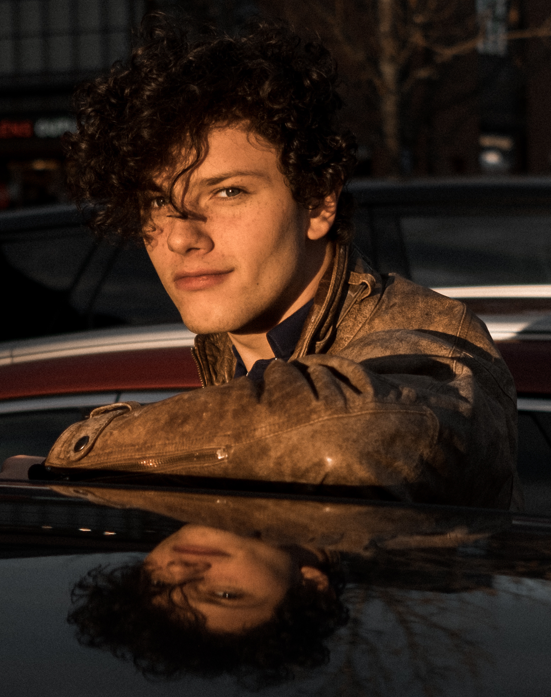

Benjamin Natalli
Technical Audio & Dialogue Designer
I am a Technical Audio Designer specializing in complex dialogue systems, automation tools, and dynamic game audio implementation. With a deep passion for removing production bottlenecks, I bridge the gap between creative sound design and robust system architecture.
// Experience
Lead Technical Audio Designer
2024 — Present | Echoes of the Void (UE5)
- Architected and maintained the entire dialogue pipeline, handling over 50,000 lines of voice-over.
- Developed custom Python tools (WAAPI) to automate import, metadata tagging, and leveling.
- Collaborated closely with narrative designers to build branching logic structures in Blueprints.
Audio Programmer & Designer
2022 — 2024 | Aura: Generative Audio
- Integrated generative music systems in Unity using FMOD and C#.
- Designed procedural soundscapes under strict 15ms latency constraints.
// Tech Stack
Engine & Middleware
- Unreal Engine 5 / Blueprints
- Wwise & WAAPI
- Unity / FMOD
Languages
- Python
- C++ (Fundamentals)
- C#
Other Tools
- Perforce / Git
- Reaper / Pro Tools
- Jira / Confluence